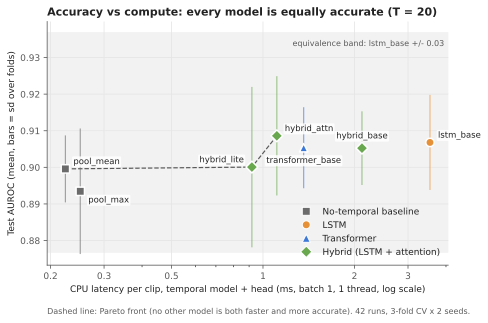
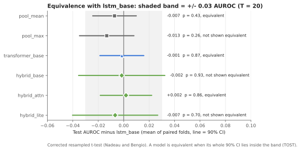
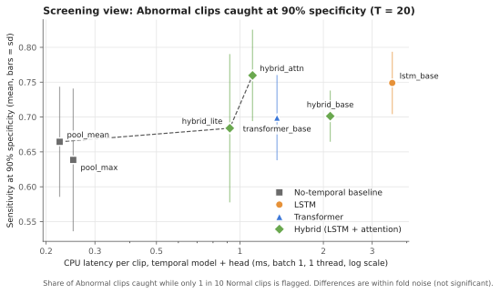
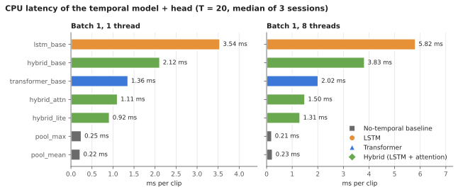
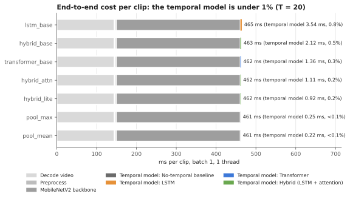
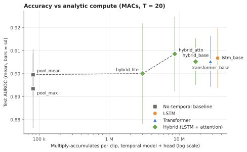

Compute versus Accuracy Trade-off in LSTM and Transformer Models for Medical Video Classification
RV University . November 2026
The study in one page
Short videos of children's ear canals are labelled Normal or Abnormal. A model that flags
Abnormal videos could help screening, but it has to run on ordinary computers without a graphics card.
The two most common ways to read a video frame by frame are the LSTM and the Transformer.
Transformers are often assumed to be more accurate but more expensive. This study tests that assumption
fairly: every model sees exactly the same frame features, data splits and training budget, and only the
part that reads the sequence of frames changes.
0.907 vs 0.905
AUROC of the LSTM vs the Transformer: statistically equivalent
2.6x faster
Transformer vs LSTM per clip on one CPU thread (1.36 vs 3.54 ms)
under 1%
share of the total time per clip spent in the temporal model
42 runs
7 models x 3 folds x 2 seeds, plus 48 timing jobs
What we found
All 7 models reach the same accuracy (AUROC 0.89 to 0.91).
The Transformer is as accurate as the LSTM and 2.6 times faster.
Even a model that ignores frame order matches them.
There is no real trade-off: the cheaper model loses nothing.
What it means
Best all-round model: hybrid_attn (top accuracy, 3.2x faster than the LSTM).
The real cost is video decoding and the image network, not the LSTM or Transformer.
Contents
1Two ways to read a video
2Why this study
3Questions and hypotheses
4The data
5From video to numbers
6The seven models
7Training and testing
8How we measure
9Results: accuracy
10Results: screening view
11Results: compute
12What it means
13Limitations
14Conclusion
AGlossary
1Two ways to read a video
A video is a sequence of images (frames). To decide whether a clip is Normal or Abnormal, a model first
turns each frame into a list of numbers that describes it, then combines the frames into one decision. The
part that combines frames is called the temporal model. This study compares two families of
temporal model.
The LSTM: one frame at a time, with a memory
An LSTM (Long Short-Term Memory network) reads the frames in order, one after another. It keeps a
running memory. At each frame, small learned "gates" decide what to add to the memory, what to forget and what
to pass on. After the last frame, the memory summarises the whole clip.
The memory is passed along the chain, so step 2 cannot start before step 1 has finished.
Strengths: order is built in; small and well understood; works on small datasets.
Weakness: the steps must run one after another, so the work cannot be spread across processor cores.
Its cost grows in proportion to the number of frames.
The Transformer: all frames at once, with attention
A Transformer looks at all frames at the same time. Each frame is compared with every other frame
("attention"), and the comparison decides how much each frame should borrow from the others. Because it sees
everything at once, it is also told each frame's position. The results are averaged into one summary.
All comparisons can be computed together, which suits modern processors.
Strengths: frames are processed in parallel; any frame can link directly to any other.
Weaknesses: the number of comparisons grows with the square of the number of frames; it usually
needs more data to train well.
LSTM
Transformer
How it reads
One frame after another
All frames together
Knows the order
Automatically
Needs a position signal
Runs in parallel
No
Yes
Cost as frames grow
Proportional to frames
Faster than proportional (comparisons)
Common belief
Cheaper, a bit less accurate
More accurate, more expensive
The last row is the assumption this study puts to the test.
Hybrids and "no temporal model"
A hybrid uses both: an LSTM first reads the frames in order, then an attention block lets every
step compare itself with every other. We also test the opposite extreme: a model with no temporal model at
all, which simply averages the frames. If it scores as well as the others, the order of the frames is not
adding anything for this task.
2Why this study
Screening happens on ordinary computers. Clinics and school programmes rarely have graphics cards.
What a model costs on a normal laptop processor (CPU) matters as much as its accuracy.
Comparisons in the literature are rarely fair. They are usually run on graphics cards and large
datasets, and the LSTM and Transformer often get different inputs, data or training effort.
Medical video datasets are small. With a few hundred clips, the extra power of a Transformer may not
help, while its cost remains.
The earlier project used an LSTM only. Its code also had errors (wrong colour order, wrong image scaling,
short videos silently dropped, test results computed on training data). This study rebuilds the pipeline
correctly before comparing anything.
The fair-test rule
Everything is held constant except the temporal model: same frame features, same data splits,
same classifier at the end, same training rules, same machine. Any difference in the results
can then only come from the temporal model.
3Questions and hypotheses
The hypotheses were written down before any result existed, including the margin for calling two
models "equally accurate". This prevents choosing the test after seeing the numbers.
Question
Hypothesis tested
Status
Q1. Accuracy Is the Transformer more accurate than the LSTM?
H0-acc: both are equally accurate. "Equal" means the difference in AUROC (see section 8) is
reliably within +/- 0.03.
Answered
Q2. Compute What does each cost on a CPU?
H0-cpu: the Transformer is no slower than the LSTM for one clip.
Answered
The comparison that decides Q1 is the main pair, lstm_base against transformer_base, which were sized
to have a similar number of learned parameters (1.78 million and 1.40 million). The other five models add context.
4The data
The dataset is a private collection of short pediatric ear examination videos, recorded with a handheld
camera. Each video carries one label, Normal or Abnormal, and the child's age.
Property
Value
Videos
874
Normal
643 (73.6%)
Abnormal
231 (26.4%)
Age of the child
3 to 18 years (median 11)
Resolution
480 x 640, portrait
Length
0.9 to 71 s (median 13 s)
Frame rate
12.6 to 29.8 fps (median 29)
Total size
2.6 GB
Three things to keep in mind
Imbalance. About 3 in 4 videos are Normal. A "model" that always answers Normal is already
73.6% accurate, so plain accuracy is misleading. We judge models mainly by AUROC.
No patient ID. Two videos of the same child could end up in training and testing. This affects
every model equally, so the comparison stays fair.
Privacy. Videos and features never leave the machine. Only summary numbers and video IDs are shared.
Why the ear set (a finding in itself)
The study first tried a second, oral-cavity video set (535 videos). The pipeline worked, but the frame features
carried almost no signal: a simple straight-line model reached only AUROC 0.57 to 0.60, and the child's age
alone did better (0.66). On the ear set, the same simple model reaches 0.91 to 0.93, and age alone is at
chance (0.50), so the models cannot cheat by guessing from age. The study therefore uses the ear set.
5From video to numbers
Every model receives exactly the same input, built once by the pipeline below.
What is T, the number of frames?
Videos are long (median 374 frames) and a model cannot take every frame, so we take T evenly spaced
frames. This study uses T = 20: for a typical 13-second video, one frame about every 0.65 seconds.
Very short videos have their frames repeated to reach 20; no video is ever dropped (only 4 videos are shorter
than 40 frames).
What is MobileNetV2, and why is it frozen?
MobileNetV2 is a small, fast image network that was trained on a large collection of everyday photos
(ImageNet). We use it as a fixed "frame describer": it turns each frame into 1,280 numbers and is not
trained further ("frozen"). This keeps the comparison about the temporal model alone.
Computed once, reused by every model
Because the image network is frozen and the frames are never altered, its output for a frame is always the
same. So the 1,280 numbers for all 874 videos were computed once (5.5 minutes on the laptop) and saved.
Every training run then reads these numbers instead of decoding videos, which gives identical results at about
1/100 of the cost. Frames 1 to 40 were stored; T = 20 uses every second one.
Errors fixed from the earlier code
Colours were fed in the wrong order (blue and red swapped); now correct.
Images were scaled the wrong way for this network; now the network's own preparation is used.
Short videos were silently dropped; now they are padded and logged.
Results were computed on videos the model had trained on; now every test video is unseen.
6The seven models
All seven share the same input (20 frames x 1,280 numbers) and the same small classifier at the end:
one layer of 64 units, dropout of 50% (randomly switching off half the units during training, against
overfitting), and one output: the probability that the clip is Abnormal. Only the temporal model in the
middle differs.
The models one by one
Model
What it does, in plain words
Parameters
MACs per clip
lstm_base
Two LSTM layers (256, then 128 units). The same model as the earlier project, so it is the reference.
1,779,329
35.4 M
transformer_base
Shrinks each frame to 256 numbers, adds its position, runs 2 attention blocks with 4 "heads" (4 comparisons in parallel), then averages. Sized to match the LSTM.
1,404,289
28.0 M
hybrid_base
LSTM (128) reads the frames in order, then 1 attention block, then averages.
862,465
17.2 M
hybrid_attn
New design (see below): shrink each frame to 128, LSTM (128), 1 attention block, then attention pooling plus max pooling.
444,930
8.6 M
hybrid_lite
The same design at half the width (64), for the low-cost end.
156,994
3.0 M
pool_mean
No temporal model: the average of the 20 frame descriptions goes straight to the classifier.
82,049
0.08 M
pool_max
No temporal model: for each of the 1,280 numbers, the largest value over the 20 frames.
82,049
0.08 M
Parameters are the numbers the model learns. MACs (multiply-accumulate operations) count the
arithmetic needed for one clip; they do not depend on the computer. Both exclude the shared MobileNetV2, which
costs about 300 M MACs per frame for every model alike.
The new hybrid design: hybrid_attn and hybrid_lite
These were designed around what the task looks like. An Abnormal finding is mostly a matter of how the
ear canal looks, and as the camera moves it may be visible in only some of the frames. Averaging all
frames dilutes such a finding, so the design picks out the informative frames instead.
Shrink first: the LSTM works on 128 numbers instead of 1,280, so it costs half of hybrid_base.
Attention pooling: instead of a plain average, the model learns a weight for each frame and takes a
weighted average, so informative frames count more.
Max pooling: keeps the strongest response seen in any single frame, so a brief finding is not lost.
Why include models with no temporal model?
pool_mean and pool_max ignore the order of the frames completely. They are controls: if they score as
well as the LSTM and Transformer, then reading the frames in order adds nothing for this task, and the cheapest
model is the sensible choice. They are not part of the main LSTM vs Transformer test.
7Training and testing
Splitting the data: 3-fold cross-validation, twice
The 874 videos are split into 3 equal parts (folds), keeping the share of Abnormal videos the same in
each. A model is trained on two parts and tested on the third, three times, so that every video is tested
exactly once. The whole procedure is repeated with a second random split (two "seeds"). Every model gets
6 test results, on exactly the same videos as every other model, so the models can be compared fold by fold.
Part of each fold
Videos
Abnormal
Used for
Training
494 to 495
131
Learning the model
Validation (15% of the training part)
88
23
Deciding when to stop, choosing decision cut-offs
Test
291 to 292
77
Final score only; never seen during training
Training rules (identical for every model)
Balanced weights: mistakes on Abnormal videos count 1.89 times, on Normal videos 0.68 times, so the
model cannot win by always answering Normal.
Batches and epochs: 32 videos per training step; at most 100 passes over the data (epochs).
Early stopping: after each epoch the model is scored on the validation videos; training stops when the
score has not improved for 15 epochs, and the best version is kept. The learning speed is halved after 5
epochs without improvement.
Optimiser settings follow standard practice for each family: the LSTM and the pooling models use Adam
at learning rate 0.001; models with attention use AdamW at 0.0003 with a 5-epoch warm-up, the usual recipe
for attention models.
Machine: Intel Core i5-12450H laptop, CPU only, 4 threads. All 42 runs took about 18 minutes in total.
A small fix that mattered
The training library's built-in AUROC is an approximation. On a first, failed dataset it read 0.52 where the true
value was 0.41, which can make early stopping keep the wrong epoch. Early stopping now uses the exact
validation AUROC.
8How we measure
Accuracy: the main score and the screening scores
AUROC: the main score
Take one random Abnormal video and one random Normal video. AUROC is how often the model gives the Abnormal
one the higher score. 0.5 is a coin flip, 1.0 is perfect. It does not depend on any cut-off and is
not fooled by the 3-to-1 imbalance.
Sensitivity at 90% specificity
The screening number: the share of Abnormal videos caught when the cut-off is set so that only 1 in 10
Normal videos is wrongly flagged. Missing an Abnormal video is the costlier mistake, so this matters.
A model outputs a probability. To get a yes/no answer we need a cut-off, and the yes/no scores depend on
it. We report three cut-offs, the last two chosen on validation videos only and then applied unchanged to test:
Cut-off
How it is set
0.5
The default: probability 0.5 or more means Abnormal.
Balanced (Youden)
The point that best balances catching Abnormal videos and clearing Normal ones.
High sensitivity
The point that catches 95% of the Abnormal validation videos ("do not miss cases").
At each cut-off we report accuracy (share of all videos right), recall or sensitivity (share of Abnormal
videos caught), specificity (share of Normal videos cleared), precision (of the videos flagged Abnormal, the
share that really are) and NPV (of the videos cleared, the share that really are Normal).
Statistics: is a difference real?
Paired comparison. Each model is compared with lstm_base fold by fold, on the same test videos.
Corrected t-test. The training parts of different folds overlap, which makes ordinary tests too
confident. The Nadeau and Bengio correction widens the uncertainty to account for this.
Equivalence test. "No significant difference" does not prove two models are equal. Proving
equality needs a margin fixed in advance: if the 90% confidence interval of the AUROC difference lies entirely
inside +/- 0.03, the models are called equivalent.
Compute: how the speed was timed
Each measurement runs in a fresh program, so settings and memory from one model cannot affect another.
Each model is called 50 times to warm up, then timed over 300 calls; the median is reported.
Everything is repeated in 3 sessions in shuffled order, on a plugged-in laptop.
Settings: one clip at a time (batch 1, the screening case) and 32 at a time; 1 and 8 processor threads.
The input is random numbers: speed does not depend on what the model has learned, so no retraining is needed.
The shared front end (decoding the video, preparing frames, MobileNetV2) is timed separately.
9Results: accuracy
Model
AUROC
Sensitivity at 90% specificity
AUPRC
Training time per fold
hybrid_attn
0.909 +/- 0.016
0.760 +/- 0.066
0.795
27 s
lstm_base (reference)
0.907 +/- 0.013
0.749 +/- 0.045
0.787
38 s
transformer_base
0.905 +/- 0.011
0.699 +/- 0.061
0.778
35 s
hybrid_base
0.905 +/- 0.010
0.701 +/- 0.037
0.763
25 s
hybrid_lite
0.900 +/- 0.022
0.684 +/- 0.106
0.773
23 s
pool_mean
0.900 +/- 0.009
0.665 +/- 0.079
0.764
9 s
pool_max
0.893 +/- 0.017
0.639 +/- 0.102
0.755
9 s
Mean +/- standard deviation over the 6 test folds (291 videos each, 77 Abnormal). AUPRC is a second
ranking score that focuses on the Abnormal class.

Figure 1. Accuracy against CPU time per clip (temporal model and classifier only, one clip, one thread).
How to read it. Further right means slower; higher means more accurate. The grey band is
lstm_base's score +/- 0.03, the margin for "equivalent". Every model sits inside the band, even though the
fastest is about 16 times quicker than the slowest. The dashed line joins the models that no other model beats on
both speed and accuracy (the Pareto front): pool_mean, hybrid_lite and hybrid_attn. The vertical bars show how much
each score varies across folds; they overlap almost completely.

Figure 2. Each model's AUROC minus lstm_base's, with its 90% confidence interval.
How to read it. The dot is the average difference; the line is the range the true
difference most likely lies in. A model is equivalent to the LSTM when its whole line fits inside the grey
+/- 0.03 band. transformer_base, hybrid_attn and pool_mean pass. The other three are not worse; their lines are
simply too wide to prove equality with 6 folds.
Model vs lstm_base
Difference
p-value
90% interval
Verdict
transformer_base
-0.001
0.87
-0.019 to +0.016
Equivalent
hybrid_attn
+0.002
0.86
-0.018 to +0.022
Equivalent
pool_mean
-0.007
0.43
-0.024 to +0.010
Equivalent
hybrid_base
-0.002
0.93
-0.035 to +0.032
Not shown
hybrid_lite
-0.007
0.70
-0.040 to +0.027
Not shown
pool_max
-0.013
0.26
-0.035 to +0.008
Not shown
A p-value above 0.05 means no detectable difference. None of the six differs from the LSTM.
Answer to Q1
The Transformer and the LSTM are equally accurate: the difference is -0.001 AUROC and the whole 90% interval
(-0.019 to +0.016) lies inside the +/- 0.03 margin. H0-acc is supported.
Does frame order matter?
Hardly. pool_mean, which ignores the order of the frames, reaches 0.900 against 0.907 for the LSTM, with
82 thousand parameters instead of 1.78 million and about 1/430 of the arithmetic. The finding is mostly about how a
frame looks, not how frames change over time. The one hint in favour of temporal models appears in the screening
view below.
A note on stability: an earlier trial with 5 folds ranked hybrid_lite first; here it is mid-table. Rankings that
change with the data split confirm that the small gaps between models are noise.
10Results: screening view

Figure 3. Share of Abnormal videos caught while only 1 in 10 Normal videos is flagged, against CPU time per clip.
How to read it. Higher is better. Here the models spread more: hybrid_attn (0.76) and
lstm_base (0.75) catch more Abnormal videos than the pooling models (0.64 to 0.67). This is the only place where
reading frames in order seems to help, but with 6 folds the gap is not statistically reliable (p = 0.11). It is a
lead for future work, not a finding.
Yes/no decisions at the three cut-offs
Model
Cut-off 0.5
Balanced cut-off (from validation)
Accuracy
Precision
Recall
Accuracy
Precision
Recall
Specificity
lstm_base
0.841
0.755
0.623
0.852
0.704
0.792
0.873
transformer_base
0.840
0.705
0.712
0.838
0.660
0.816
0.846
hybrid_base
0.828
0.707
0.695
0.835
0.653
0.816
0.842
hybrid_attn
0.849
0.745
0.693
0.844
0.678
0.801
0.859
hybrid_lite
0.825
0.689
0.732
0.834
0.669
0.784
0.852
pool_mean
0.826
0.641
0.786
0.824
0.633
0.805
0.831
pool_max
0.817
0.641
0.797
0.822
0.634
0.794
0.832
Means over 6 test folds. Always answering Normal would score accuracy 0.736.
Accuracy is 0.82 to 0.85 for every model, only about 10 points above always answering Normal. That is why
it is reported but never used to decide.
At the 0.5 cut-off the models behave very differently. The LSTM is cautious: precise (0.755) but it
catches only 62% of Abnormal videos (29 of 77 missed per fold). pool_mean is eager: it catches 79% but raises
more false alarms. This reflects where each model happens to place its probabilities, not how well it
separates the classes.
At the balanced cut-off they even out: recall 0.78 to 0.82, specificity 0.83 to 0.87. This is the fair
comparison. Report validation-chosen cut-offs, not 0.5.
Not missing Abnormal videos: the high-sensitivity cut-off
Model
Recall
Missed (of 77)
Specificity
False alarms (of 214)
Precision
NPV
pool_max
0.922
6.0
0.657
73.5
0.498
0.960
pool_mean
0.909
7.0
0.696
65.2
0.522
0.957
transformer_base
0.887
8.7
0.732
57.5
0.563
0.952
hybrid_base
0.885
8.8
0.756
52.3
0.571
0.950
lstm_base
0.879
9.3
0.753
53.0
0.579
0.949
hybrid_lite
0.870
10.0
0.742
55.3
0.554
0.944
hybrid_attn
0.868
10.2
0.755
52.5
0.574
0.944
Cut-off chosen on validation to catch 95% of Abnormal videos, then applied to test. Counts are per test fold.
On new videos, 87% to 92% of Abnormal videos are caught (6 to 10 missed per 77). The 95% target is not
fully reached because the validation set holds only 23 Abnormal videos.
The price is false alarms: roughly every second flagged video is actually Normal (precision 0.50 to 0.58).
A cleared video is Normal 95% of the time (NPV about 0.95 for every model). For a tool that rules videos
out, this is the key number.
No temporal model clearly improves the miss rate. Catching more without more false alarms most likely needs
better frame features, not a different temporal model.
Are the probabilities trustworthy?
Not as they are. Abnormal videos receive an average probability of only 0.62 to 0.70, Normal videos 0.09 to 0.26.
The models rank videos well (high AUROC) but their probabilities are too low, which is another reason the 0.5
cut-off misbehaves. pool_mean is the best calibrated (Brier score 0.118; lower is better). Before showing
probabilities to a clinician they should be recalibrated on validation data.
11Results: compute
Model
1 clip, 1 thread
1 clip, 8 threads
32 clips, 8 threads
Best clips per second
vs lstm_base
lstm_base
3.54 ms
5.82 ms
18.9 ms
1,693
reference
hybrid_base
2.12 ms
3.83 ms
11.6 ms
2,753
1.7x faster
transformer_base
1.36 ms
2.02 ms
19.1 ms
1,677
2.6x faster
hybrid_attn
1.11 ms
1.50 ms
8.5 ms
3,761
3.2x faster
hybrid_lite
0.92 ms
1.31 ms
4.8 ms
8,476
3.9x faster
pool_max
0.25 ms
0.21 ms
0.4 ms
80,211
14x faster
pool_mean
0.22 ms
0.23 ms
0.4 ms
82,199
16x faster
Temporal model and classifier only; median of 3 sessions. Memory use was 330 to 410 MB for every
model, almost all of it the software library itself.

Figure 4. CPU time per clip for each model, one clip at a time, on 1 and on 8 threads.
How to read it. Shorter bars are faster. The Transformer needs 1.36 ms against the
LSTM's 3.54 ms, because it processes all 20 frames together while the LSTM must step through them. The right panel
shows a surprise: 8 threads are slower than 1 for a single clip. The work is too small to split, so
coordinating the threads costs more than it saves. The temporal model should run on one thread.
Answer to Q2
For one clip at a time, the Transformer is 2.6 times faster than the LSTM on 1 thread and 2.9 times faster on
8 threads, in all 3 timing sessions. H0-cpu holds: the Transformer is not slower; it is clearly faster. When
32 clips are processed together on 8 threads, the two are equal (18.9 vs 19.1 ms).

Figure 5. The full cost of one clip: decoding the video, preparing frames, MobileNetV2, then the temporal model.
How to read it. Each bar is the total time to classify one clip. The grey parts are the same
for every model: decoding the video (about 145 ms) and running MobileNetV2 on 20 frames (about 312 ms). The coloured
temporal model is the thin sliver at the end: under 1% of the total. A clip takes about 465 ms with the LSTM and
462 ms with the Transformer. The speed gap that looks large in Figure 4 almost disappears in practice.

Figure 6. Accuracy against the amount of arithmetic per clip (MACs), which does not depend on the computer.
How to read it. The same picture as Figure 1 with a hardware-independent cost axis.
Arithmetic spans more than 400 times (0.08 M to 35 M), yet accuracy stays flat. Note that measured time does not
shrink in proportion: pool_mean has 430 times less arithmetic than the LSTM but is "only" 16 times faster, because
every call has a fixed overhead that dominates for tiny models.
2.6x faster on 1 thread, 2.9x on 8 threads; equal at batch 32
Supported
There is no trade-off here
A trade-off would mean paying more compute for more accuracy. Instead, accuracy is flat while compute varies
16-fold in time and 430-fold in arithmetic. The Transformer is both as accurate and cheaper than the LSTM,
so it is the better temporal model for one-clip-at-a-time use on a CPU.
But the temporal model is not where the cost is
End to end, the temporal model is under 1% of the time. Decoding the video and running the image network
dominate. To make screening faster, use fewer frames or a lighter image network; switching LSTM to
Transformer saves only about 2 ms per clip.
Which model to use
Best all-round: hybrid_attn. Joint-best AUROC (0.909), best sensitivity at 90% specificity (0.76), best
accuracy at the default cut-off, and 3.2 times faster than the LSTM. Its design (pick out informative frames)
matches the task.
Cheapest acceptable: pool_mean. Equivalent AUROC at 0.22 ms per clip, 16 times faster than the LSTM, and the
best-calibrated probabilities; but about 8 points lower on sensitivity at 90% specificity.
Between the two classic models: transformer_base. Same accuracy as lstm_base, fewer parameters, faster.
Why the models agree
The Abnormal finding is mainly visible in how individual frames look. Once a strong, fixed image network has
described each frame, deciding from the 20 descriptions is an easy last step, and any reasonable temporal model
(or none) does it equally well. The limit on accuracy is set by the frame features, not by the temporal model.
13Limitations
Six folds give wide uncertainty: some models could not be shown equivalent, and the screening-view gap
could not be confirmed. A third seed would narrow this.
Only 20 frames were tested, so the effect of the number of frames remains open.
No patient ID: repeat videos of one child may sit in both training and test folds. This affects all models
alike, so the comparison is fair, but the absolute scores may be slightly optimistic.
One laptop: timings are from a single Intel i5-12450H. Other processors will give other numbers, though the
ordering should hold.
End-to-end time adds separately measured parts (decode, preparation, image network, temporal model)
rather than timing one combined program.
Frozen ImageNet features were used throughout; a network trained on ear images could change the absolute
accuracy, though not the fairness of the comparison.
14Conclusion
Under a strict fair-test design, with identical inputs, splits, classifier and training rules, the LSTM and the
Transformer are equally accurate for classifying pediatric ear videos, and the Transformer is 2.6 times
faster per clip on a CPU. A new hybrid, hybrid_attn, matches the best accuracy at a third of the LSTM's cost, and
even a model that ignores frame order performs equivalently. The expected compute-versus-accuracy trade-off does not
appear: the cheaper models lose nothing. In a full screening pipeline the temporal model accounts for under 1% of the
time, so future savings should come from fewer frames or a lighter image network, and future accuracy gains from
better frame features.
AGlossary
Temporal model
The part of the model that combines the frames of a clip into one decision.
LSTM
Long Short-Term Memory network: reads frames one by one, keeping a learned memory.
Transformer
Reads all frames at once; attention compares every frame with every other.
Attention
A learned way of deciding how much each frame should draw on the others.
Hybrid
An LSTM followed by an attention block.
Pooling
Combining frames by a simple rule: average (mean), maximum, or a learned weighted average.
MobileNetV2
A small image network trained on everyday photos, used frozen to describe each frame with 1,280 numbers.
Frozen
Not trained further; its output never changes.
T
Number of frames taken from each video (20 here).
Parameters
The numbers a model learns during training.
MACs
Multiply-accumulate operations: the arithmetic needed for one clip.
Latency
Time to process one clip, in milliseconds (ms).
Batch
How many clips are processed together in one call.
Thread
One stream of work on the processor; this laptop can run 12 at once.
Epoch
One full pass over the training videos.
Early stopping
Stopping training when the validation score stops improving, keeping the best version.
Fold / cross-validation
Splitting the data into parts and rotating which part is used for testing.
Validation set
Videos held out from training to decide when to stop and where to set cut-offs.
AUROC
How often an Abnormal video is ranked above a Normal one; 0.5 is chance, 1.0 is perfect.
AUPRC
A ranking score focused on the Abnormal class.
Cut-off
Probability above which a clip is called Abnormal.
Recall (sensitivity)
Share of Abnormal videos that are caught.
Specificity
Share of Normal videos that are correctly cleared.
Precision
Of the videos flagged Abnormal, the share that really are.
NPV
Of the videos cleared as Normal, the share that really are.
Calibration
Whether a predicted probability of 0.7 really means a 70% chance.
p-value
How surprising the observed difference would be if the models were truly equal; above 0.05 means no detectable difference.
Equivalence test
Shows two models are equal within a margin fixed in advance (+/- 0.03 AUROC here).
Pareto front
The models that no other model beats on both speed and accuracy.